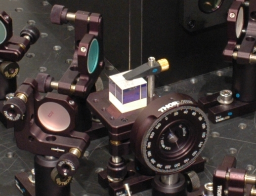

Besteht Licht aus unteilbaren Portionen?
Gibt es Zufall in der Quantenwelt?
Wie funktioniert Quantenkryptographie?
Was sind verschränkte Photonen?
Ein interaktiver Zugang zur faszinierenden Welt der Quantenphysik (Konzept).
Aktualisiert: 22.05.19
© Didaktik der Physik, Universität Erlangen-Nürnberg,